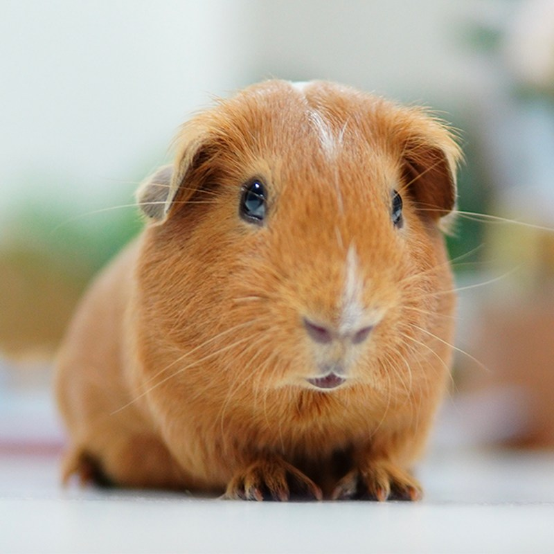
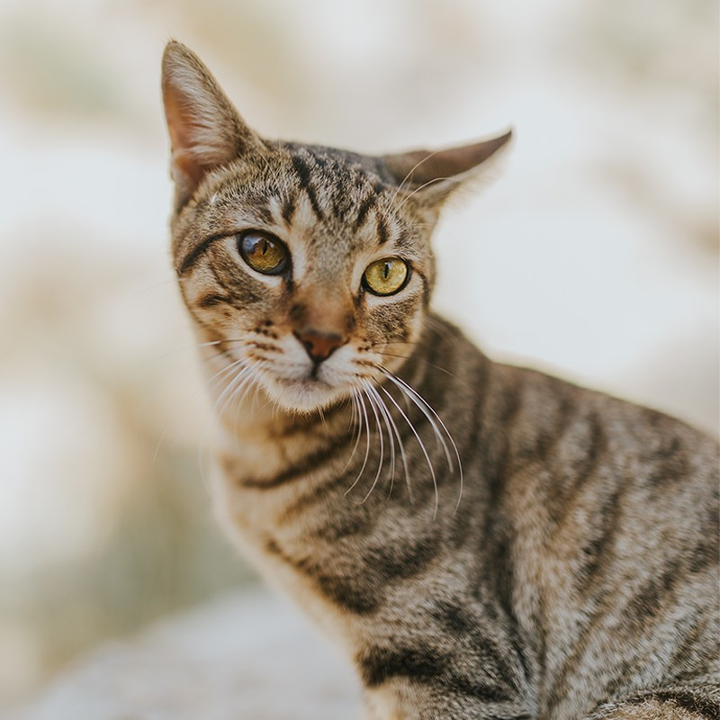

A Second Chance for Twin Cities Pets
Foster-based care, honest matches, and a clear next step for neighbors who can host, volunteer, adopt, or partner.
Our Mission
Twin Cities Animal Rescue is a foster-based nonprofit that helps abandoned, neglected, and homeless animals find safe, lasting homes across Minneapolis, Saint Paul, and nearby communities. We believe every animal deserves patience, veterinary care, and a person who will show up for them.
We do not warehouse animals in a kennel. Pets live in volunteer foster homes while we match them with adopters. That model only works when neighbors step forward to foster, volunteer, donate, or adopt.

Pet Spotlight
Each month we introduce one foster pet who is ready for a permanent home. Meet this month’s spotlight and share the story with a friend who has room to adopt.

Impact This Year
These numbers are written as text so visitors using screen readers hear the same story as sighted visitors.
- 418 animals placed in adoptive homes
- 96 active foster households
- 162 community volunteers supporting transport, events, and intake
- 100 percent of adoptable pets are spayed or neutered before placement
How You Can Help
Choose the path that fits your life. Every role keeps another kennel space from filling and another animal from waiting.
- Foster: Open a spare room or crate space for two to eight weeks while a pet heals and learns household routines.
- Volunteer: Drive animals to vet appointments, staff adoption events, or help with photos and applications.
- Adopt: Give a rescued pet a permanent home and free a foster spot for the next intake.
- Partner: Clinics, trainers, and local businesses help us stretch every donated dollar.
Ready to start? Visit the Contact page and send a volunteer or foster interest form.
Featured This Month
Meet the pets currently waiting in foster care. The larger photo loads on wider screens; smaller screens receive a lighter image.
A Message From Our Team
Watch a short welcome from our volunteer coordinators. If the video does not play, the text below the player explains the same invitation.